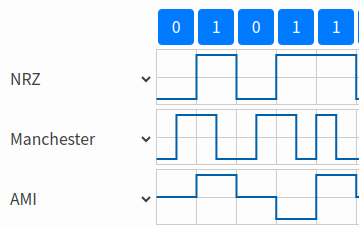

Corrections#
Modulation analogique#
Exercice 1#
Le signal modulé \(x\) a pour transformée de Fourier :
Au niveau du démodulateur, le signal modulé \(w\) a pour transformée de Fourier :
Le filtre passe-bas étant de fréquence de coupure \(f_c=f_p\), les deux termes \(M(f-2f_p)\) et \(M(f+2f_p)\) sont atténués. Finalement, le signal en sortie du filtre est nul.
Exercice 2#
Le signal modulé est \(x(t) = m(t) \sin(2\pi f-p t)\) et le signal modulé est \(y(t) = m(t) \sin(2\pi f_q t)\). En conséquence, le spectre du signal modulé est :
On remarque que lorsque \(f_q \neq f_p\) alors la démodulation ne fonctionne pas puisqu’on ne retrouve pas, dans les basses fréquences, le spectre original du signal \(m\).
Exercice 3#
La technique de chiffrage du son consistait en deux étapes :
modulation d’amplitude du signal à la fréquence \(f_\text{max}\) ;
filtrage passe-bas avec une fréquence de coupure égale à \(f_\text{max}\).
Exercice 4#
La présence d’un spectre représentant \(g(t)+d(t)\) permet d’avoir facilement accès à l’enregistrement en mono, avec une fréquence maximale de 15 kHz. Le spectre de \(g(t)-d(t)\) permet de fabriquer l’enregistrement stéréo. L’impulsion de Dirac en 19 kHz, qui correspond à la moité de 38 kHz, permet au récepteur de se caler sur cette fréquence de 38 kHz.
On peut écrire le signal \(x\) comme :
\[ x(t) = x_1(t) + x_2(t) + x_3(t) \]où
\[\begin{split} x_1(t) &= g(t)+d(t) \\ x_2(t) &= \cos(2\pi f_p/2 t) \\ x_3t() &= (g(t)-d(t)) \cos(2\pi f_p t) \end{split}\]où \(f_p=38\) kHz.
{kind=link}
Modulation numérique#
Exercice 5#
{kind=link}
Figure extraite de cet outil de simulation.
{kind=link}
{kind=link}